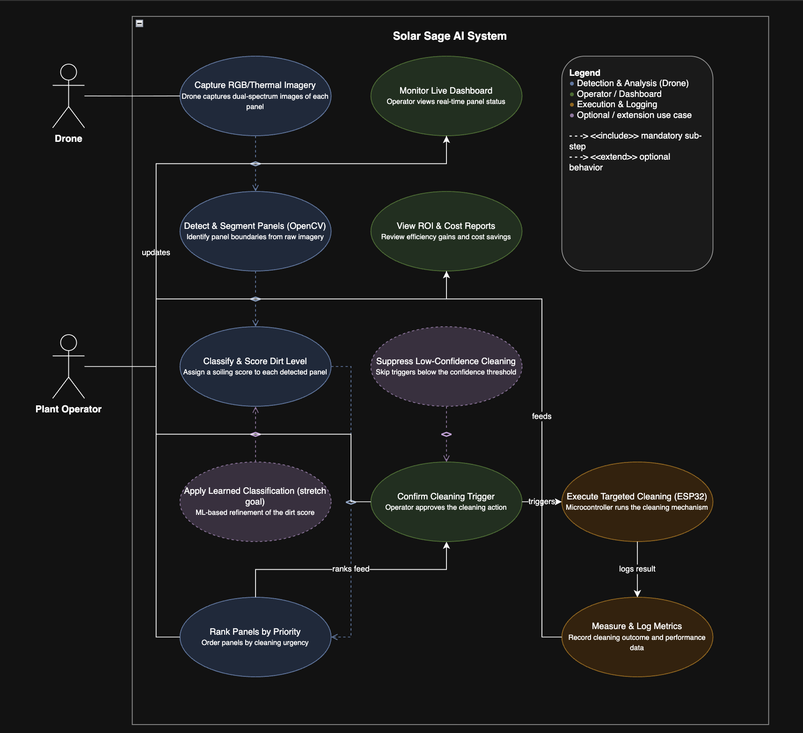
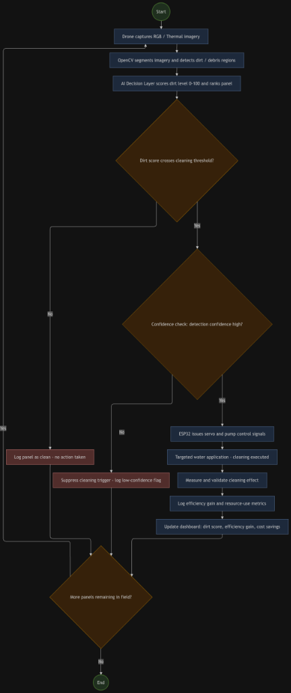

📐 Diagrams¶
This section contains all system design diagrams for the Solar Sage AI project.
Use Case Diagram¶
The use case diagram shows the interactions between actors (Operator, Drone, System) and the core functionalities of the Solar Sage AI platform.

Data Flow Diagrams¶
Level 0 — Context Diagram¶
The context-level DFD shows the system as a single process with external entities (Operator, Drone, Solar Panels) and the data flows between them.

Level 1 — Subsystem Diagram¶
The Level 1 DFD breaks the system into its major subsystems: Image Processing, Decision Engine, Actuation Controller, and Dashboard.

Level 2 — Detailed Diagram¶
The Level 2 DFD provides a granular view of internal data flows within each subsystem, including the multi-agent decision pipeline.

Activity Diagram¶
The activity diagram illustrates the complete operational workflow of Solar Sage AI—from autonomous drone image capture, OpenCV segmentation, and multi-agent AI dirt scoring, to conditional ESP32 actuation, metric logging, and panel looping.

graph TD
Start([Start]) --> A[Drone captures RGB / Thermal imagery]
A --> B[OpenCV segments imagery and detects dirt / debris regions]
B --> C[AI Decision Layer scores dirt level 0-100 and ranks panel]
C --> D{Dirt score crosses cleaning threshold?}
D -- No --> E[Log panel as clean - no action taken]
D -- Yes --> F{Confidence check: detection confidence high?}
F -- No --> G[Suppress cleaning trigger - log low-confidence flag]
F -- Yes --> H[ESP32 issues servo and pump control signals]
H --> I[Targeted water application - cleaning executed]
I --> J[Measure and validate cleaning effect]
J --> K[Log efficiency gain and resource-use metrics]
K --> L[Update dashboard: dirt score, efficiency gain, cost savings]
E --> M{More panels remaining in field?}
G --> M
L --> M
M -- Yes --> A
M -- No --> End([End])Gantt Chart — Project Timeline¶
The Gantt chart shows the complete project timeline across all six phases, from research through final demo, with task dependencies and milestone markers.
gantt
title Solar Sage AI — Project Timeline (UCS503P)
dateFormat YYYY-MM-DD
axisFormat %b %d
section Phase 1 - Research & Proposal
Literature survey on drone-based solar cleaning :a1, 2026-08-01, 18d
Problem statement definition :a2, 2026-08-05, 10d
Solution approach design :a3, after a2, 12d
Project proposal report (LaTeX) :a4, 2026-08-15, 16d
Proposal Submission :milestone, m1, 2026-08-31, 0d
section Phase 2 - System Design
Use case diagram :b1, 2026-09-01, 10d
DFD Level 0, 1, 2 :b2, 2026-09-05, 12d
System architecture design :b3, 2026-09-10, 14d
Tech stack finalization (OpenCV, ESP32, Python) :b4, 2026-09-08, 10d
GitHub Pages documentation site :b5, 2026-09-15, 15d
section Phase 3 - Core Development
CI/CD pipeline setup :c1, 2026-09-25, 12d
Drone image capture pipeline :c2, 2026-10-01, 15d
ESP32 servo & pump actuation prototype :c3, 2026-10-05, 20d
OpenCV panel segmentation & dirt detection :c4, 2026-10-10, 22d
Dirt scoring engine (0-100 heuristic) :c5, 2026-10-20, 15d
Multi-agent decision layer :c6, 2026-10-15, 25d
Prototype Demo :milestone, m2, 2026-11-10, 0d
section Phase 4 - Dashboard & Integration
Web dashboard (per-panel metrics, efficiency, ROI):d1, 2026-11-01, 18d
End-to-end detect-and-clean loop integration :d2, 2026-11-05, 20d
Containerized deployment :d3, 2026-11-20, 10d
section Phase 5 - Testing & Validation
Water, electrical & dust tests on test array :e1, 2026-11-15, 15d
Baseline vs. automated cleaning comparison :e2, 2026-11-20, 15d
Latency and accuracy benchmarking :e3, 2026-11-25, 15d
Bug fixes and optimization :e4, 2026-12-01, 12d
section Phase 6 - Final Report & Demo
Final project report (LaTeX) :f1, 2026-12-01, 15d
Project demo preparation :f2, 2026-12-08, 10d
Documentation finalization :f3, 2026-12-10, 8d
Final Report Submission :milestone, m3, 2026-12-20, 0d